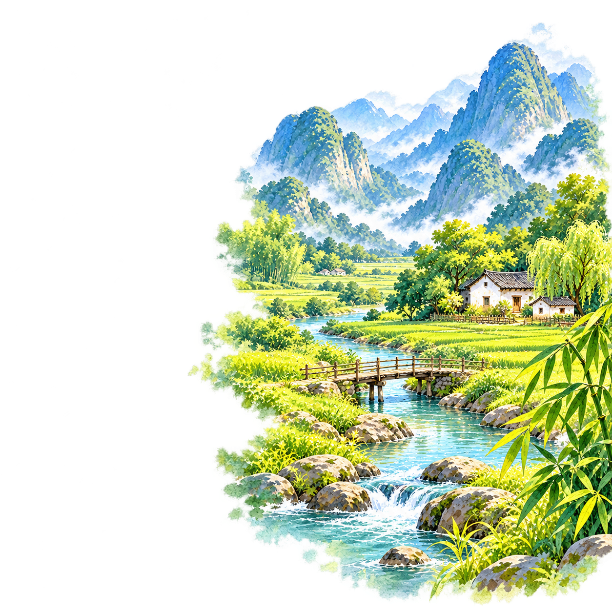
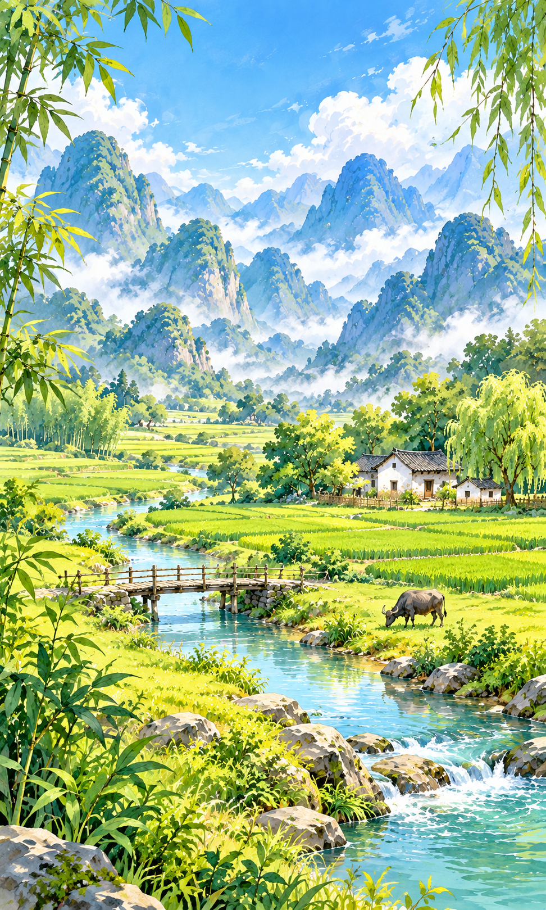
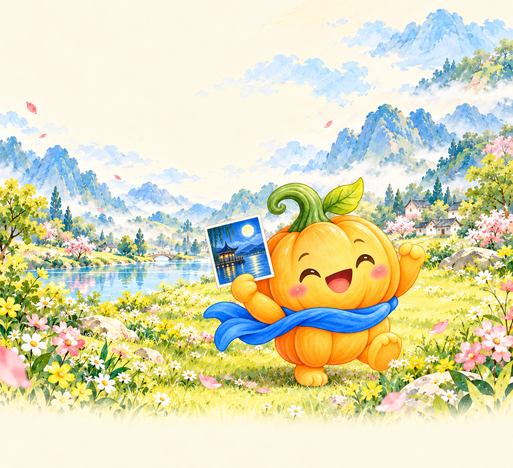
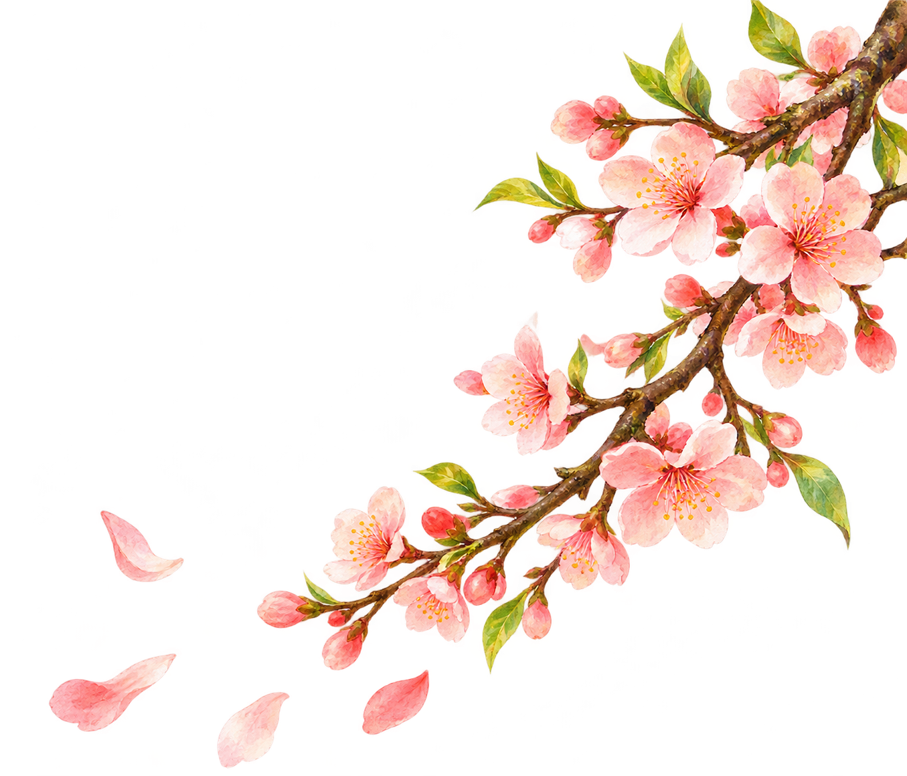

贝贝古诗 · 正式素材
三套主题，16 张 PNG。首页与成长页已包含贝贝，禁止重复叠加角色。
月与思乡
首页 · 含贝贝
home_moonlight
1254 × 1254继续学习插画
art_continue_moonlight
1254 × 1254学习页背景
scene_poem_moonlight
1374 × 1145收藏封面
cover_moon
971 × 1619山水田园
首页 · 含贝贝
home_landscape
1254 × 1254
继续学习插画
art_continue_landscape
1254 × 1254学习页背景
scene_poem_landscape
1374 × 1145
收藏封面
cover_landscape
972 × 1619四季景物
共用素材

成长页 · 含贝贝
scene_growth_with_mascot
1313 × 1198今日复习 · 有诗文
art_review_scroll
1355 × 1160
飞花令
art_flower_game
1355 × 1161解释框助手
mascot_peeking
1254 × 1254